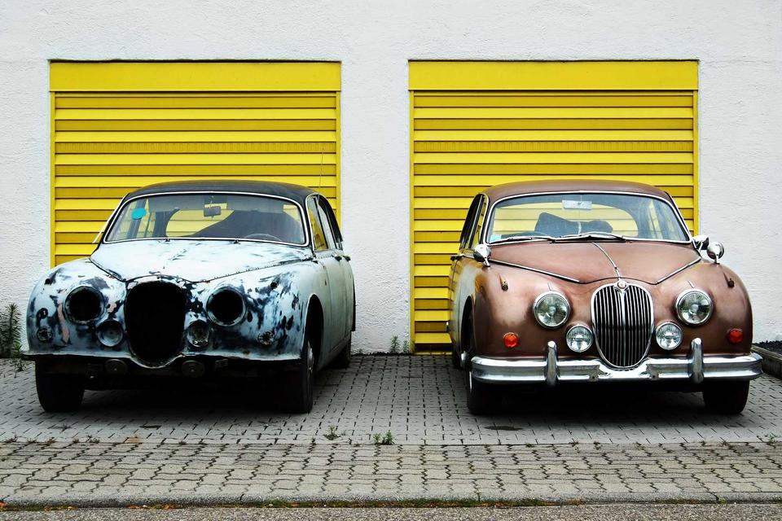

Welcome
Brushstroke Paints is a small, family-run paint shop. We mix any colour you like while you wait.

Garage doors painted in our Sunshine Yellow.
This week only: a free brush with every large tin.
This season's colours
Each colour below is written a different way in the CSS.
Tomato:
tomatoOcean Blue:
#1e6fa8Forest Green:
rgb(46, 125, 50)Sunshine, half see-through:
rgba(255, 193, 7, 0.5)Lavender:
hsl(270, 50%, 70%)Picture frames
We sell frames too. Each one below uses a different border style.
solid
dashed
dotted
double
groove
ridge
inset
outset
Painting tips
- Wash the walls before you paint.
- Put masking tape around windows and light switches.
- Two thin coats look better than one thick coat.
Always test a small patch first.
Visit us
12 Canvas Street. Open Monday to Saturday, 9am to 5pm.
Free parking behind the shop.